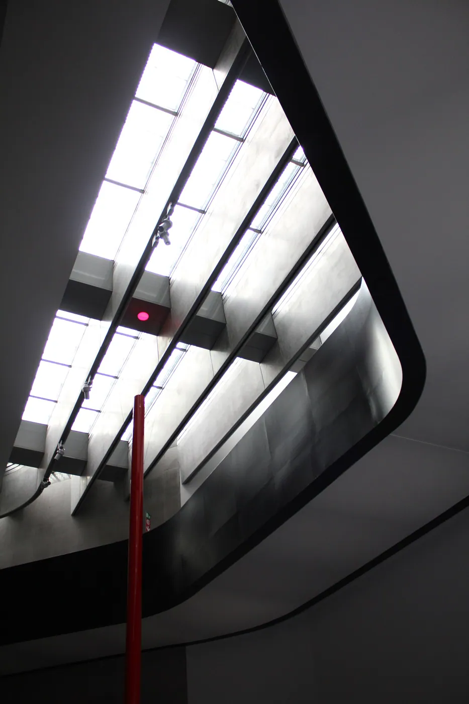
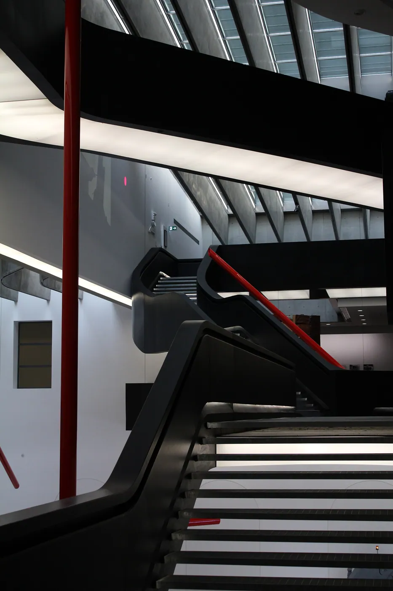
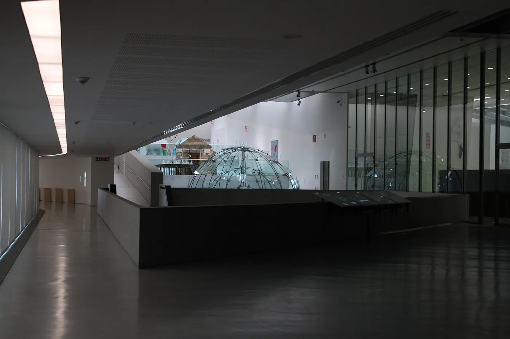
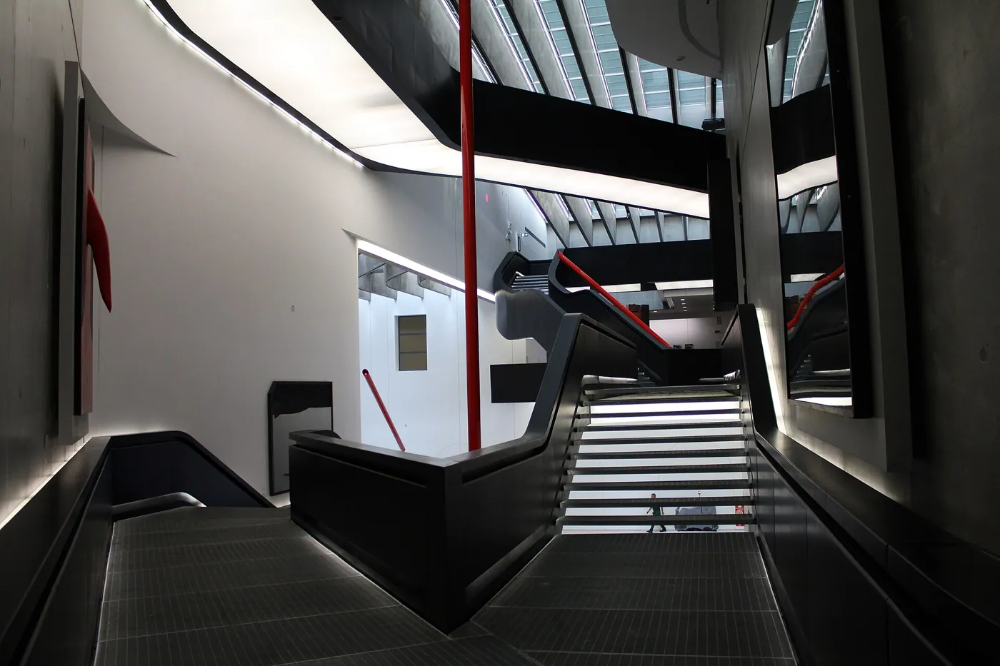

1/7 · Exterior · MAXXI - Museo nazionale delle arti del XXI secoloPhoto: Elenuar58 · CC BY-SA 4.0 · source2/7 · Interior · Interior of the MAXXI museum for contemporary arts in Rome, ItalyPhoto: Commonurbock23 · CC BY-SA 3.0 · source

3/7 · Interior · Interior of the MAXXI museum for contemporary arts in Rome, ItalyPhoto: Commonurbock23 · CC BY-SA 3.0 · source

4/7 · Interior · Interior of the MAXXI museum for contemporary arts in Rome, ItalyPhoto: Commonurbock23 · CC BY-SA 3.0 · source

5/7 · Interior · Interior of the MAXXI museum for contemporary arts in Rome, ItalyPhoto: Commonurbock23 · CC BY-SA 3.0 · source

6/7 · Detail · MAXXI - Museo nazionale delle arti del XXI secolo I soffitti del MaxxiPhoto: Elenuar58 · CC BY-SA 4.0 · source7/7 · Detail · MAXXI - Museo nazionale delle arti del XXI secolo ColonnePhoto: Elenuar58 · CC BY-SA 4.0 · source